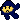
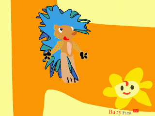

Programs Of BabyFirst TV - Programmes Y BabyFirst TV
Ready? - Seto?
If so, select one from the following...
Types of shows:
Language Playground
Feelings Garden
Thinking Journey
Sensory Wonderland
Numbers Parade
Imagintion Lane
Rainbow Dreams
Language Playground
The Wordies
BabyFirst Tales
Safari Scrapbook
Feelings Garden
TEC The Tractor
Sali Mali
Squeak!
Thinking Journey
Baby Maze
Brainy Baby
First Impressions
Unknown Named
Fred And Fiona
Sensory Wonderland
Peekaboo, I See You!
Safari Scrapbook
Hopla
Numbers Parade
Numbers Farm
Number Time
Numbers Around The Globe
Shapes And Sizes
Imagination Lane
Baby DIY
Shushybye Baby
Sandman
Rainbow Dreams
Night Night Lullybye
Mobiles
Kalidascopes
Color Symphony
Each one is sorted by our chosen order... We'll tell you when it's a Navy Flower Show... Just look for this icon: .
The Wordies
A bunch of wordies watch their own TV in their house. They learn more each day. A clear girl voice says each word and explains so much that your child will soon be a brainiac!
BabyFirst Tales
Care to hear a story? Good. They're stories made revised just for babies. Try to answer questions asked on the show as they're asked.
Shushybye Baby
The award-winning show named Shushybye Baby is on BabyFirst TV! Join Snoozles, Dozie, and Zeez on their adventures through Shushybye. Award-Winning songs and stories and many other things prove for this show to be very amuzing to babies galore! We even have the website link!
Baby Maze

Baby Maze puts these baby animals to a puzzled state. When their items fly of move to the end of the maze, they have to run the correct way through the maze to reach their ending. See the above promo as well.